Entertainment Systems: Testing and Inspection
Troubleshooting
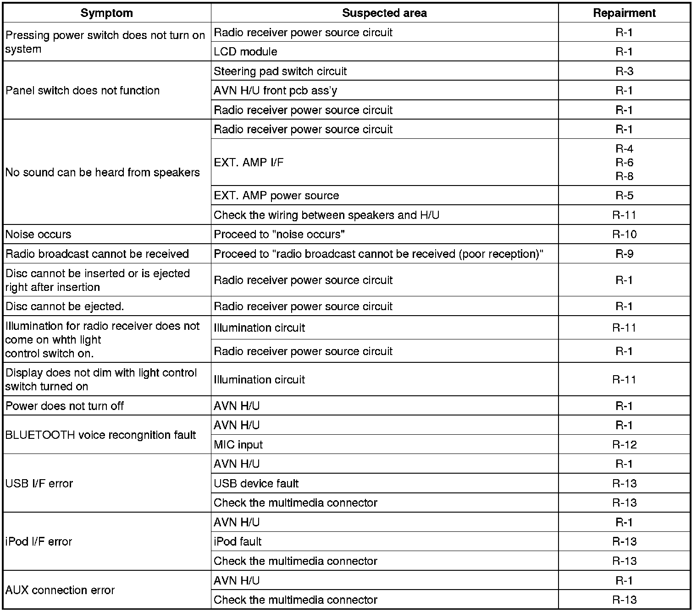
R-1 : Replace the AVN head unit
1. Check the same problems after replaceing the AVN head unit
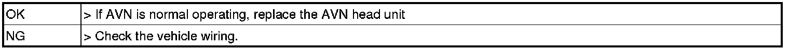
R-2 : Check the power connection of AVN head unit.
1. Remove the AVN head unit.
2. Check the specified condition of terminal.
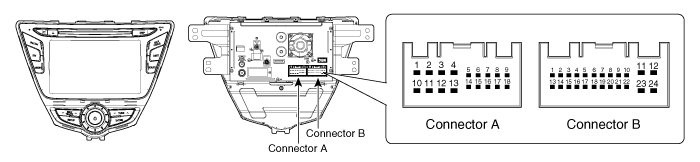
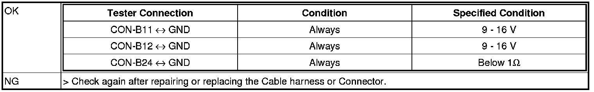
R-3 : Check the steering wheel remote control
1. Check the steering wheel remote control connector specification
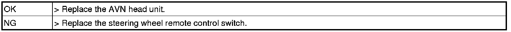
R-4 : Replace the external amplifier
1. Check the same problems after replaceing the external amplifier
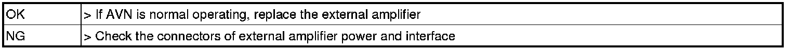
R-5 : Check the external amplifier power cable
1. Remove the external amplifier
2. Check the specified condition of terminal.
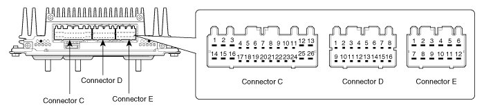
R-6 : Check the external amplifier CAN interface
1. Remove the AVN head Unit.
2. Remove the external amplifier
3. Check the specified condition of terminal.

R-7 : Check the external amplifier S/PDIF connection
1. Remove the audio head unit.
2. Remove the external amplifier
3. Check the specified condition of terminal.

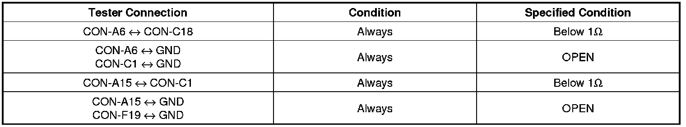

R-8 : Check the wiring harness and connector
1. Remove the AVN head unit
2. Remove the external amplifier
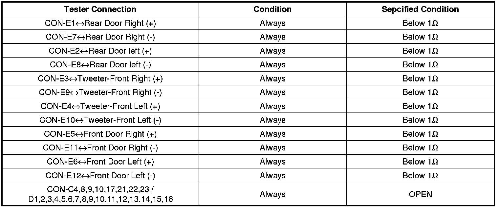
R-9: Test after replacing the AVN head unit

1. Check the input signal of illumination (+)
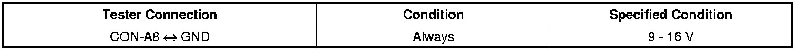


2. Check the illumination (-) input signal using the oscilloscope
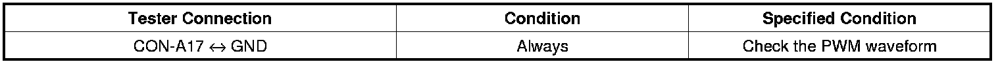

3. Check the vehicle illumination control unit.
R-10 : Check the mic input condition.
1. Test again after replacing the B/T mic
R-11 : Test after replacing the AVN head unit
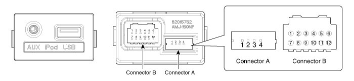

1. Test after replacing the multimedia jack.


2. Check the multimedia jack connector.


3. Check again after replacing the external input device with another one.
R-12 : Disc cannot be inserted or ejected right after insertion
1. Is the ignition key at ACC or ON?


2. Power ON reset. Disconnect the 2 audio fuses, wait 5 minutes with ignition switch off. And then insert both fuse. Then turn the ignition key ON. Is CD ejected?

3. If CD does not eject, don't try removing it. The player may be damaged. Please replace the CD player.
R-13 : Sound sometimes skips when parking
1. Is CD face scratched or dirty?

2. Does it play properly if CD is replaced with an existing proper CD?